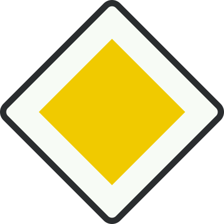
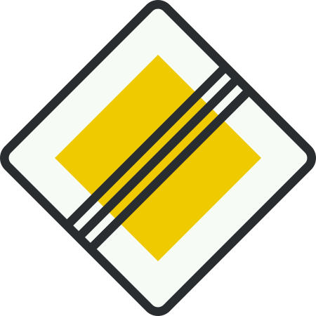

Auto Theorie – Verkeersborden - Voorrang
Voorrang
Deze verkeersborden regelen wie voorrang heeft.
Voorrangsweg (bord B1)
- Geeft aan dat je je op een voorrangsweg bevindt.
- Bij kruisingen moeten bestuurders die niet op de voorrangsweg rijden, jou voorrang geven.
- Parkeren op een voorrangsweg is verboden buiten de bebouwde kom.
-
Plaatsing:
- Binnen bebouwde kom → bord vóór het kruispunt.
- Buiten bebouwde kom → bord ná het kruispunt.

Verkeersbord B1
Einde voorrangsweg
Duidt aan dat de voorrangsweg eindigt.

Verkeersbord B2
Voorrangskruispunt
Dit bord geeft aan dat het volgende kruispunt een voorrangskruispunt is.Jij hebt daar voorrang op verkeer dat van links én rechts komt.
Voorrangskruispunt
Dit bord geeft aan dat het volgende kruispunt een voorrangskruispunt is.Jij hebt daar voorrang op verkeer dat van links komt.
Voorrang verlenen (bord B6)
Dit bord betekent dat je voorrang moet geven aan bestuurders op de kruisende weg. Je nadert een voorrangsweg. Je hoeft alleen te stoppen als er verkeer aankomt.
Stop en voorrang verlenen (bord B7)
Dit bord verplicht je om altijd te stoppen en daarna voorrang te geven aan bestuurders op de kruisende weg. Ook stoppen als er geen verkeer is. Staat er een stopstreep, dan moet je precies vóór die streep stilstaan.